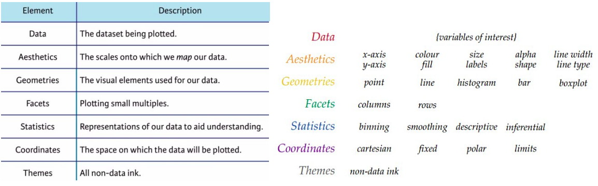

7 Grammar of Graphics
7.1 Goals
In this lesson I will explain the concept behind the “grammar of graphics”. The emphasis is on the idea and not the particular computing environment (R and ggplot2) that we will use.
7.2 Introduction
By the end of this lesson you should understand the design of the grammar of graphics. This will help you develop a mental model of what the R functions for plotting do, making the process easier to remember and modify to suit your own goals.
The next lesson will show you the R commands that accompany each concept.
After both lessons, and some practice, you should be able to create new visualizations of many different types, customize them, and be ready to learn many more methods and extensions to the basics.
7.3 The layers of a plot
A plot is assembled in layers (see below), starting with data, then adding aesthetic mappings from variables to features, geometries that determine how the features are displayed, optional facets for splitting the plot into subplots, statistics for computing new variables from the data, a coordinate system (usually Cartesian), and finally themes for modifying the appearance of the plot independently from the data.

7.4 Data
Data always come from a data frame (or tibble) with columns representing variables and each row corresponding to a different observation. We’ll have a lot more to say about organizing and manipulating data later.
7.5 Aesthetic mappings
Variables in your data are connected to features of your visualization, such as position on the x and y axes, colours, shapes, sizes, and other features with a mapping that connects the two.
Each mapping has an associated scale. If a variable is represented on the x axis, the scale translates a numerical value onto a position. For the aesthetic shape, the scale converts a categorical value into a square, circle or other shape. Similarly for colours, line types, symbol sizes and more.
Aesthetic mappings can be used in several ways in the same plot, for example to help place symbols and text labels. A process called inheritance allows this to happen. Inherited aesthetics can be overridden too; thinking this through can be a subtle but have dramatic effects on your plot. Be on the lookout when we get to examples.
Sometimes you will want to customize a plot by making all symbols quares or changing all the lines to green. You don’t use aesthetic mappings for this, because you are not connecting a variable to a feature of the graph. Instead you will override the default plot appearance specifying a particular colour or shape as part of the geometry.
7.6 Geometries
A geometry is a visual representation of data: points, lines, shaded regions, boxplots, histograms, tiles, text labels, and many, many more. The representation is defined by the geometry using the data mapped to aesthetic features (position, colour) of the geometry. You need at least one geometry to create a plot, but you can combine two or more geometries (lines and points for example) to make more complex plots.
7.7 Facets
A simple plot has one facet – think about standard x-y plots. You can also separate out the data in one plot into many facets, using a variable from the dataset to define which data appear on each facets. Depending on the data you might arrange facets in a grid with common x and y axes on all the facets. Or you might arrange them in a line with different scales on each facet. Facets can make complex plots! We will skip over facets on our discussion of making plots in the next lesson, but come back to them later.
7.8 Statistics
Sometimes you want to use a variable for a feature – position on the y axis – but before you do that, you want to perform some computations. Perhaps you want to plot a mean or compute a standard error of the mean. Or maybe you want to count the number of occurrences of a level of a categorical variable. There are two ways to go about this. You can compute the derived variables “by hand” – writing R code to do it. Or you can use stat features of a plot to compute these for you. For routine plots like bar graphs, histograms, and boxplots, its generally easiest to let ggplot do these calculations for you. For less commonly used plot types, or custom plots you invent, you will want do to the calculations yourself. We’ll talk about summarizing data in a future lesson.
7.9 Coordinates
Usually we plot data on the familiar (Cartesian) x-y axes. But you can use polar coordinates. Or project a 3d model onto a plane. Or draw lots of other shapes like trees or maps. Cartesian coordinates are so familiar we usually pass over this choice without even thinking.
7.10 Themes
All other features of the visualization are combined into the idea of the theme. This includes colour schemes, line thicknesses, how tick marks are drawn, the font type and size, and where legends are placed. We will look at these features – in fact we’ve already seen a simple example of changing font size – throughout the course and collect a bunch of examples at the end.
7.11 Extensions
There are several kinds of extensions to the basic ggplot plots. Many R packages define new geometries, colour palettes, map projections, and themes. A few packages define amazing new ways of transforming ggplots, for example to create animations or three dimesnional rendering using raytracing.
7.12 Summary
That’s the basic idea behind the grammar of graphics approach to plotting. It takes a bit of getting used to, and seems like a lot of work when you first get started, but you’ll see that the flexibility and structure the grammar provides allows you to think creatively to build a huge number of visualizations from these few elements.
7.13 Further reading
- A chapter on these ggplot concepts from a data science course
- Cheatsheets for R, in particular a ggplot cheatsheet summarizing a huge amount of information in two pages
- The R graph gallery
- Wickham’s article on the grammar of graphics (Wickham 2010)